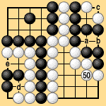

| 6.6 Territory in Seki |
|---|
| The points 'a,' 'b,' 'c,' 'd,' and 'e' in Dia. 6-10 are not counted by traditional territory rules. Under area rules III and territory rules I, however, all five of these points add to the players' scores. The ending under territory rules I would go as follows: |
|  |
| Dia. 6-10 (50) |
|---|
|
White 50, Black pass, White pass (preliminary end), Black 'd,' White pass (giving a prisoner), Black 'e,' White pass (giving a prisoner), Black pass (end of the game). Black wins by two points. Black also wins by two points under area rules III. |